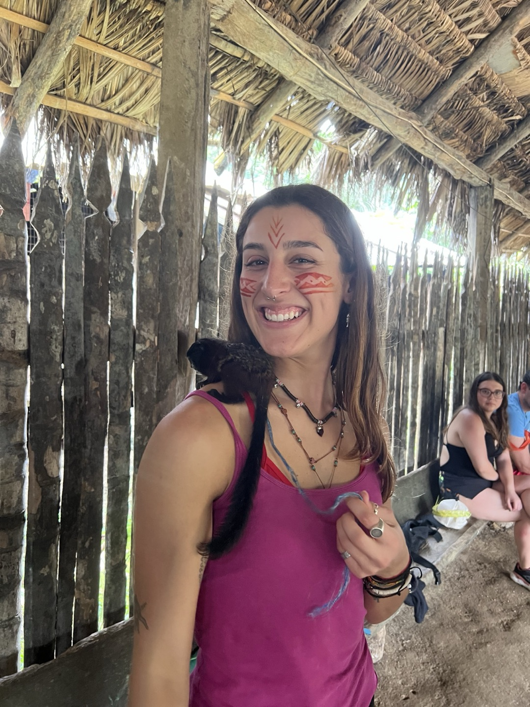
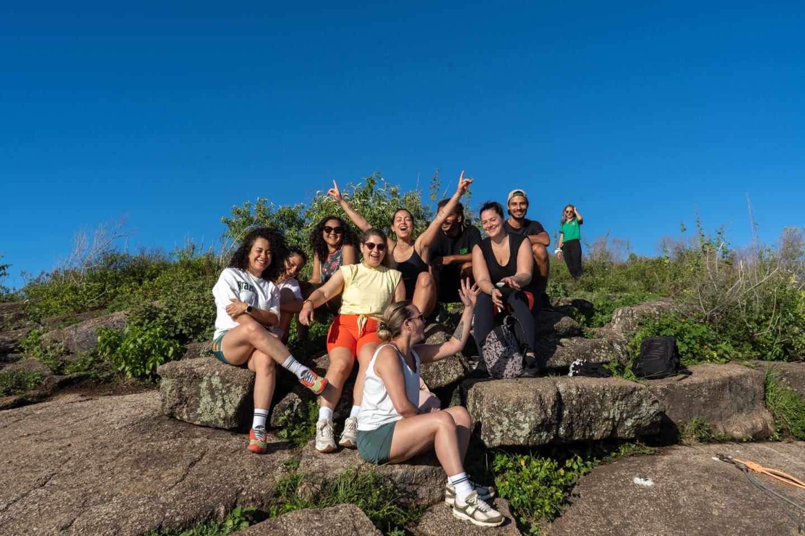
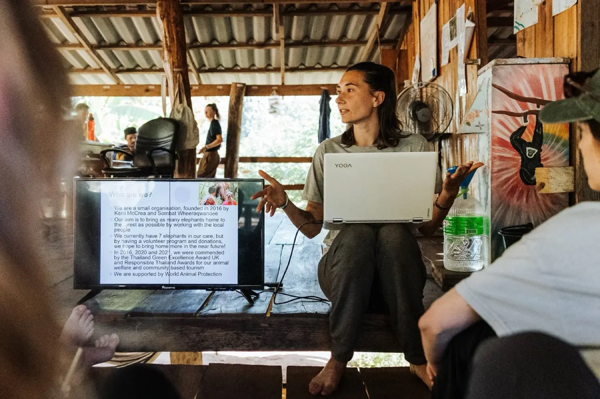
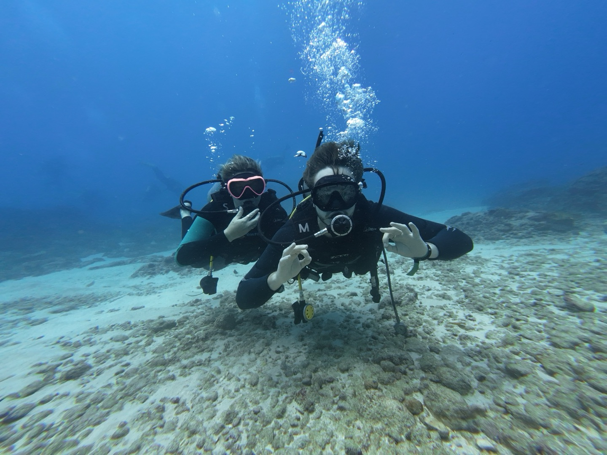
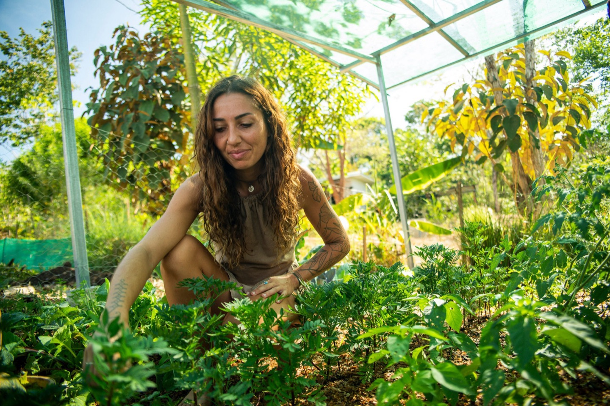

The Worldpackers brand system — the colors, type, logo, icons, mascot and voice that make us recognizable everywhere we show up.
Worldpackers connects travelers who exchange their skills for accommodation with hosts all around the world. We make travel more accessible — and more meaningful — by turning every trip into a chance to learn, connect and give back.
Enable everyone to safely travel as a volunteer, have transformative experiences, and make a positive impact on the world.
Foster the transformation of the world into a more socially & environmentally sustainable place.
Skills for stay. A few hours of help a day in exchange for accommodation — and real cultural immersion.
We believe in the power of community. Sharing knowledge and collaborating openly creates meaningful connections.
Experiences shape who we are. We value meaningful moments over possessions, and explore the world with open eyes.
Curiosity fuels growth. We stay humble, keep learning, and seek new perspectives and skills.
The world is our home. We treat every place with respect, embrace diverse cultures, and act as responsible global citizens.
Our symbol is a globe carrying a backpacker — a person on top of the world. It pairs with the Worldpackers wordmark in Source Sans 3 Bold. The horizontal lockup is primary; the icon stands alone where space is tight. Every treatment is the same artwork in a single colour — never two.
Keep clear space around the logo equal to the height of the globe symbol. Minimum size: 24 px tall for the icon, 120 px wide for the horizontal lockup on screen.
Two layers. The brand palette is what Worldpackers owns; the semantic tokens of the design system are what you actually build with, and every one of them carries a light and a dark value. Always build with semantic tokens — never raw hex. Tap any swatch to copy it.
Every colour the system owns, organised as Tailwind families and numeric steps. Think of it as the full box of paint: the raw material, not the instructions. You almost never pick these by hand — only a handful of components reference a step directly.
Each one is a role, not a shade — “foreground”, “primary action”, “destructive”, “muted”. Behind the scenes it points to a color, so you name what the color is for, never the hex code. These names come from the design system and are identical in React, Rails, Compose and SwiftUI.
Why it works this way: change the brand blue in one place and everything that says “use the brand color” updates at once — and dark mode just works, because every role already knows its light value and its dark value. No one has to hunt down hex codes. The single source is packages/tokens/tokens.json, generated from Figma; every platform reads from it.
Three styles, all linear and vertical, top to bottom, and every stop is a step of the base palette — no loose hex. They carry the brand on success and celebration screens, the Android splash, full headers and landing covers.
In the dark theme the primary and the secondary collapse into the same pair — there is one dark gradient, not two.
The brand color. Logo, links, focus, brand surfaces.
Primary buttons and the single most important action. Production still ships #28B62C on web and Android and #2BBE2D on iOS — three greens, one role.
Body text #4E5C66, secondary text #677581, borders #CFD6DB, surfaces #F5F7F8.
Error, warning, success & data. Functional only.
A single, friendly, highly legible typeface across web, iOS and Android. Source Sans 3 is the canonical name — “Source Sans Pro” is the old release and appears only in legacy native code. Four weights carry the system.
You do not pick a pixel size. You pick a role — heading-lg, body-sm — and the class carries its own responsive step. Same names in every platform.
Spacing is built on a 4px base — every step is a multiple of it. Corner radius is no longer a single value: the system ships a ten-step scale, and 5px is not one of them.
Buttons are the exception. Every button variant, size and state is a full pill — rounded-full — not a step on this scale. Read the component, not the token.
The design system ships Tabler 3.46.0 — 6,184 icons (5,130 outline, 1,054 filled) across 41 categories, vendored into the repository so nothing is fetched at runtime. Outline is the default; filled is for selected and active states. A representative selection below.
Download all 6,184 as SVG (2.7 MB .zip) Browse all 6,184 iconsThe legacy Worldpackers icon font is still shipped by the apps in production today. It is not part of the new system, and nothing new should be built with it.

Ben is our friendly guide — the warm, human face of the product. He welcomes, encourages, explains and celebrates: onboarding, empty states, tips and wins. He gives Worldpackers personality without ever getting in the way of the task.
 Excited
Excited Cool
Cool Curious
Curious Approving
Approving Heads-up
Heads-upThree families work together: Ben (mascot), People (travelers and hosts) and Elements (objects of the journey). All share clean flat shapes, generous rounding and the brand palette — never line art.


Documentary, never staged. Natural light, candid framing, genuine connection — across six worlds, from traveler portraits to the landscapes and communities they live in.





Warm, human and encouraging. We speak as we to you, always informal, always optimistic — inspiring action without hype, honest about what travel really takes.
Plain, warm language. Contractions, real talk, zero jargon.
"You can." We make the world feel reachable.
Impact, transformation and community over features.
Everyone is welcome. Every place, culture and budget respected.
Real reviews, real safety, real expectations.
Excitement about the world, balanced with practical guidance.
{kind=link}
{kind=link}
{kind=link}
{kind=link}
{kind=link}
{kind=link}